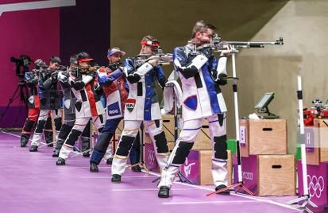
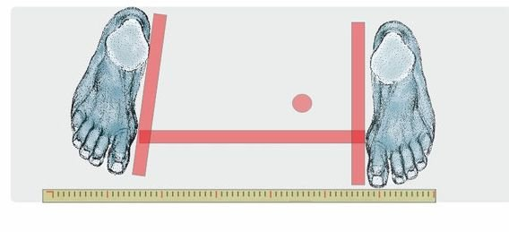

La position debout
Sans bretelle et sans appui au sol autre que les pieds, la position debout est la plus exigeante de la carabine. Elle se construit de bas en haut, comme un bâtiment, et se vérifie régulièrement. Images et légendes d’après Salluzo.
Le placement des pieds
Tout part des pieds : leur écartement et leur orientation fixent la direction naturelle du corps et de l’arme. Un bon placement se reproduit à l’identique à chaque séance.


Construire la position
Pour la rétroversion du bassin et la stabilité, voir aussi la stabilité sur le site Pistolet ↗.
Le bassin et les appuis
Comme la clé de voûte d’une arche, le bassin est la pièce autour de laquelle toute la position s’organise. Il prolonge les appuis au sol et fait la charnière avec le haut du corps. Le poids de la carabine demande un support endurant : les muscles seuls se fatiguent vite, alors on « empile » les os, du poignet au pied en passant par le coude, le bassin et le genou.
Vu de face : les appuis
- Environ 60 % du poids sur la jambe gauche et 40 % sur la droite, pour faciliter l’empilement osseux.
- La pression sous les pieds se situe au milieu de la voûte plantaire, ni sur les talons, ni sur les orteils.
- La hauteur de l’arme en cible dépend beaucoup de la place du bassin et de la ligne des épaules.
Vu de profil : la cambrure
La cambrure assure l’équilibre avant-arrière. On dégage le bassin sans le basculer franchement, et surtout sans creuser le bas du dos : une cambrure excessive fatigue les lombaires.
La tenue compte aussi : des chaussures trop serrées ankylosent le pied, qui renseigne alors mal sur l’équilibre ; un pantalon trop serré gêne la respiration abdominale.
Tassement et placement
Le tassement
Entre la prise de position et le début de la visée, la colonne vertébrale se tasse légèrement sous le poids du corps et de l’arme. Le tireur en profite pour se relâcher : il garde les seules tensions utiles et élimine les autres, comme une dernière check-list avant de viser. Le tassement économise de l’énergie et rend la position plus stable et plus reproductible.
La respiration l’accompagne : une première expiration installe le guidon légèrement au-dessus du visuel, dans le blanc du carton ; la dernière expiration fait descendre doucement le guidon en cible.
Le placement
Une position bien construite mais mal orientée oblige à forcer pour revenir face à la cible, et l’on perd tout le bénéfice de la stabilité. Le placement en hauteur est primordial debout : bien réglé, il évite de corriger en permanence et donne des bougés plus réguliers. On cherche d’abord une bonne stabilité verticale, puis la stabilité latérale.
À vérifier à chaque retour au poste, et en cours de tir, par exemple tous les cinq coups.
Corriger le placement sans forcer
La séquence de tir
La séquence de tir est l’enchaînement des gestes techniques et mentaux qui mènent au départ du coup, du chargement à la tenue après le coup. Elle a deux rôles : occuper les « temps morts » de la pensée, et servir de modèle de référence quand le tir ne se passe pas comme prévu. Chaque tireur construit la sienne ; la mettre par écrit aide à la rendre régulière. Ranger toujours son matériel au même endroit (plombs, outils) facilite aussi la répétition des gestes.
La tenue au départ du coup
Rester en position après le coup prolonge toutes les actions qui l’ont fait partir : la visée, la tenue de l’arme, la pression de l’index. Celui qui arrête de se concentrer au départ du coup devient spectateur de son tir.
L’annonce
Annoncer, c’est dire où le coup est parti avant de regarder la cible. Ce petit jeu oblige à s’observer. Avec l’expérience, on ne regarde plus seulement la place du guidon : on juge aussi la qualité du lâcher, la forme du bougé et la réaction de l’arme.
Se photographier pour se corriger

Comment faire
- Avec un partenaire d’entraînement, devant un mur blanc.
- Assez de lumière, mais à l’ombre.
- Un trépied à 6 à 8 mètres, l’appareil à hauteur de poitrine, bien perpendiculaire au tireur.
- Le retardateur, et la plus haute résolution (4K).
Ensuite
Regardez les photos sur un grand écran, ou faites-les imprimer en grand format (A1). On y voit tout de suite ce que l’on ne sent pas : la tête qui penche, l’épaule qui monte, le bassin qui part, le poids mal réparti. Refaites les photos de temps en temps pour vérifier que la position n’a pas dérivé.